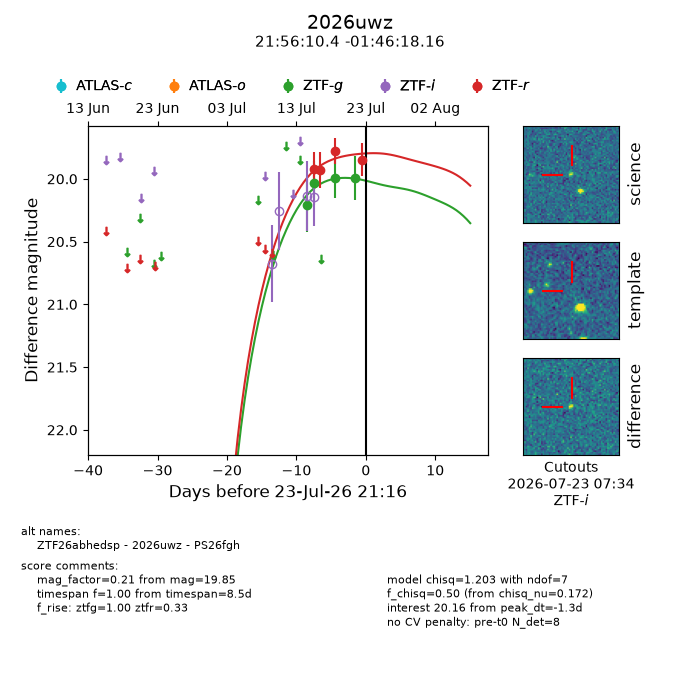
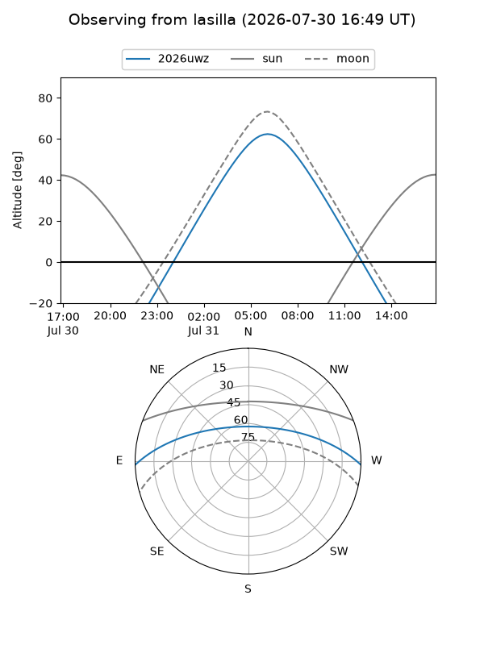
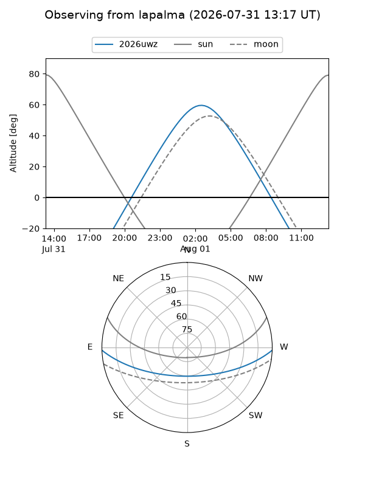
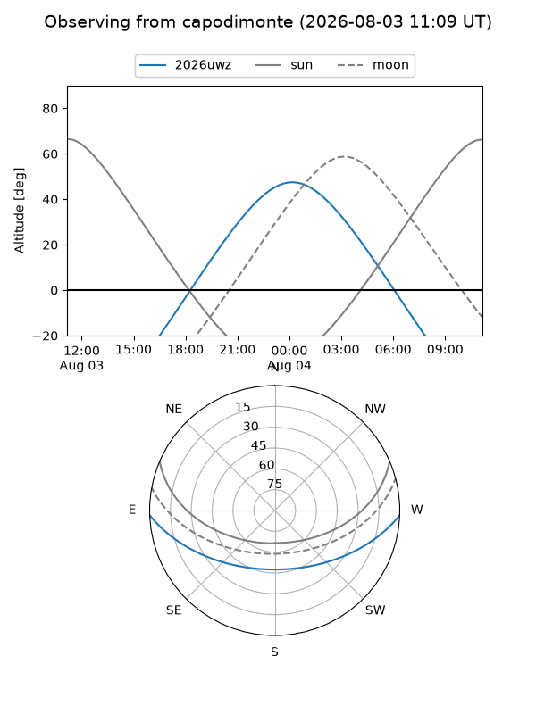
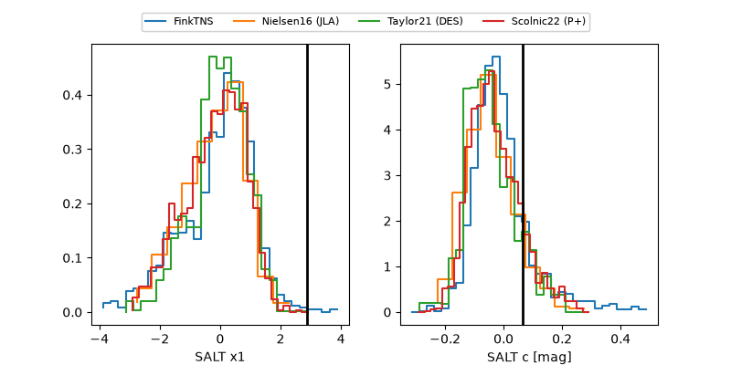

2026uwz
Target 2026uwz at 2026-07-23 21:19
Aliases and brokers:
FINK-ZTF: ztf.fink-portal.org/ZTF26abhedsp
Lasair-ZTF: lasair-ztf.lsst.ac.uk/objects/ZTF26abhedsp
ALeRCE-ZTF: alerce.online/object/ZTF26abhedsp
YSE-PZ: ziggy.ucolick.org/yse/transient_detail/2026uwz
TNS name: wis-tns.org/object/2026uwz
Direct TNS query: direct search
alt names
ZTF26abhedsp (ztf,fink_ztf)
2026uwz (tns,yse)
PS26fgh (panstarrs)
Coordinates:
equatorial (ra, dec) = 329.0434,-1.77171
equatorial (HMS+DMS) = 21:56:10.41,-01:46:18.16
galactic (l, b) = (56.4634,-40.99366)
Flags:
TNS type: nan
peak dt: -1.3
Photometry:
last ztfg=19.99, ztfr=19.85
4 ztfg, 4 ztfr detections
Lightcurve

Visibility



Additional plots
